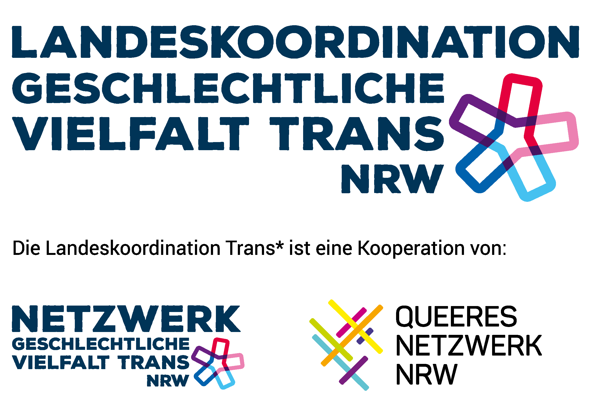
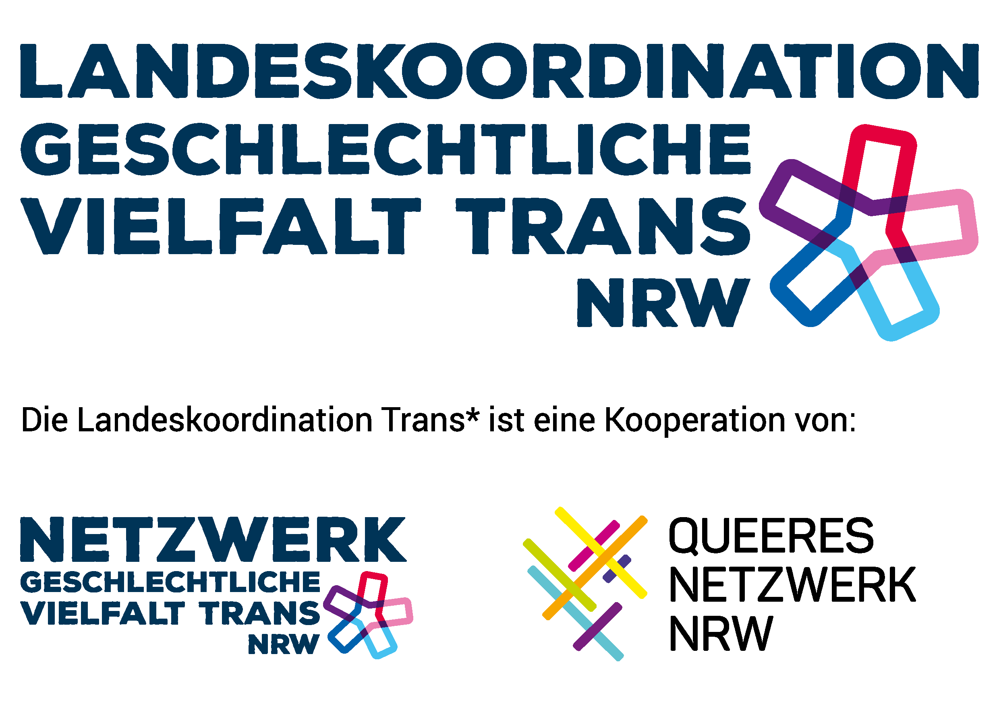

Bonanzafest 2023
The BONANZA FEST COLOGNE took place on the 1st and 2nd of July 2023 in Cologne's Südstadt at the Altes Pfandhaus. During this weekend, we had inspiring performances and music, visual and artistic impressions consisting of a filmscreening and an exhibition, workshops and of course a party and a Community Mixer.
Two installation PERFORMANCES redefined our shared space and create unique experiences. Kamalanetra Hung and Felipe González Berrios showed "Pachamama", Frederik Marroquin and Dorian Bonelli their collaboration "Being present in Time - 365 days". We were delighted to have been able to invite two very special MUSIC ACTS to Cologne on both evenings. On Saturday, TheOtherWithin explored melancholic electro depths before heading to the Bonanza Party. Säye Skye brought the BONANZA FEST to a worthy close on Sunday with his passionate rap to hypnotic beats.
Artists Jonas Monka, Ren Britton and Rosen Eveleigh, among others, enriched the festival with various EXHIBITIONS. We showed their sculptures, video installations and participatory courses in which the artists revealed their view of the world. The BlondeCobra Collective curated a wonderful SHORT FILM PROGRAMME for BONANZA FEST. The WORKSHOPS were interactive: two movement/dance workshops (Alexander Hahne: Butoh; Renan Manhães: Domain of Expansion) and two creative workshops (Alma Roggenbuck: Trans History, Nada Judi: Sun Paint/Cyano Print) gave visitors the opportunity to try things out and experience (something new).
What else?
Lovingly collected queer and trans literature was available in the QueerLesen LIBRARY. There was also be a small art market for prints (Milan Cail and Dante Freire). We also created a space for encounters: besides the relaxed hangouts in the lounge and the courtyard of Altes Pfandhaus during the festival, we invited visitors to a bring-your-own-community-BRUNCH on Sunday. We had a great time!
![_Theotherwithin_ is wearing a black flowy dress and striking a powerful pose with their arms captured in movement and their head turned towards the ceiling. Two yellow stage lights are the only source of light in the room as they illuminate the performer’s dress, the mic stand in front of them and the fog that is flowing through the room. The audience is engulfed in darkness and can just barely be made out while watching the performance. _Theotherwithin_ trägt ein schwarzes, fließendes Kleid und nimmt eine kraftvolle Pose ein, bei der deren Arme in ihrer Bewegung eingefangen werden und der Kopf zur Decke gerichtet ist. Zwei gelbe Bühnenscheinwerfer sind die einzige Lichtquelle im Raum. Sie beleuchten das Kleid der performenden Person, den Mikrofonständer und den Nebel, der den Raum durchzieht. Das Publikum ist in Dunkelheit getaucht und kann gerade noch so entziffert werden, wie es die Vorstellung verfolgt.](../images/image-small.jpg)
![A black and white image of Frederik Marroquín and Dorian Bonelli during their installative performance of ‘Being present in time – 365 days’. The two performers sit on the floor in the middle of the room while looking at two hammocks in front of them, which hang from contraptions from the railing of the gallery level above them. In each hammock is one audience member. The rest of the audience is seated in a circle around the performers. Eine Schwarz-Weiß-Aufnahme von Frederik Marroquín und Dorian Bonelli während ihrer installativen Performance "Being present in time - 365 days". Die beiden Performer sitzen auf dem Boden in der Mitte des Raumes und blicken auf zwei Hängematten vor ihnen, die an Vorrichtungen am Geländer der Galerieebene über ihnen angebracht sind. In jeder Hängematte sitzt ein Zuschauer. Der Rest des Publikums sitzt im Kreis um die Performer.](../images/3.1-small.jpg)
![Iranian rapper Säye Skye during their performance. He is looking into the camera while wearing sunglasses, a headscarf, a loose patterned button-down shirt in brown tones, loose silver pants and dark shoes. His right hand is holding the microphone while the left is captured in movement of gesticulation. Säye stands within fog, which fills the room and is illuminated through orange and blue stage lights. Der iranische Rapper Säye Skye während seines Auftritts. Er schaut in die Kamera, trägt eine Sonnenbrille, ein Kopftuch, ein lockeres gemustertes Button-Down-Hemd in Brauntönen, eine weite silberne Hose und dunkle Schuhe. Seine rechte Hand hält das Mikrofon, die linke ist in einer gestikulierenden Bewegung eingefangen. Säye steht inmitten von Nebel, der den Raum ausfüllt und durch orangefarbene und blaue Scheinwerfer beleuchtet wird.](../images/BU6A8540-small.jpg)
![Two visitors stand with their backs turned to the camera and look at a series of colourful artworks that are positioned in a straight horizontal line on a white wall. The visitor on the right is wearing their blonde hair in a ponytail and is dressed in loose black and grey clothing. The visitor on the left has medium length brown hair and is wearing a black tanktop and black shorts over blue and white leggings. They stand close together as if discussing the particular artwork in front of them. Zwei Besucher*innen stehen mit dem Rücken zur Kamera und betrachten eine Reihe von bunten Kunstwerken, die in einer geraden horizontalen Linie auf einer weißen Wand angeordnet sind. Die Person auf der rechten Seite trägt deren blondes Haar in einem Pferdeschwanz und ist in lockere schwarz-graue Kleidung gekleidet. Die Person auf der linken Seite hat mittellanges braunes Haar und trägt ein schwarzes Tanktop und schwarze Shorts über blau-weißen Leggings. Sie stehen dicht beieinander, als würden sie das Kunstwerk vor ihnen besprechen.](../images/For-Instagram-51.1-small.jpg)
![Pachamama, wearing a completely cream outfit, is seen from behind with their long hair falling onto their back while looking upwards. They are standing on a white runway that leads towards a screen at the end of the room, which shows an art installation in green, brown, black and silver tones. Geometric shapes in yellow and orange are projected onto the runway while Pachamama is indirectly lit in red. The audience is seated in a U-shape around the runway and watches the performance intently. Pachamama trägt ein cremefarbenes Outfit und ist von hinten und nach oben schauend zu sehen, während deren langes Haar auf deren Rücken fällt. Pachamama steht auf einem weißen Laufsteg, der zu einer Leinwand am Ende des Raumes führt, die eine Kunstinstallation in Grün-, Braun-, Schwarz- und Silbertönen zeigt. Geometrische Formen in Gelb und Orange werden auf den Laufsteg projiziert, während Pachamama indirekt in Rot beleuchtet wird. Das Publikum sitzt U-förmig um den Laufsteg herum und verfolgt aufmerksam die Aufführung.](../images/6.1-small.jpg)

![A black and white image of Frederik Marroquín and Dorian Bonelli during their installative performance of ‘Being present in time – 365 days’. The picture is taken from the gallery level of the performance room and shows Frederik and Dorian lying on top of each other on wooden floors and in an empty space. The gallery level is filled with people that stand or sit while watching the performance. Eine Schwarz-Weiß-Aufnahme von Frederik Marroquín und Dorian Bonelli während ihrer installativen Performance "Being present in time - 365 days". Das Bild wurde von der Galerieebene des Aufführungsraums aus aufgenommen und zeigt Frederik und Dorian, wie sie auf dem Holzboden in einem leeren Raum aufeinander liegen. Die Galerieebene ist mit Menschen gefüllt, die stehend oder sitzend die Performance beobachten.](../images/For-Instagram-19-small.jpg)


 

Sponsoring

Alnatura Super Natur Markt Filialen: D-53225 Bonn-Beuel & D-50823 Köln, Venloerstraße

und: Schee Concept Store in Köln